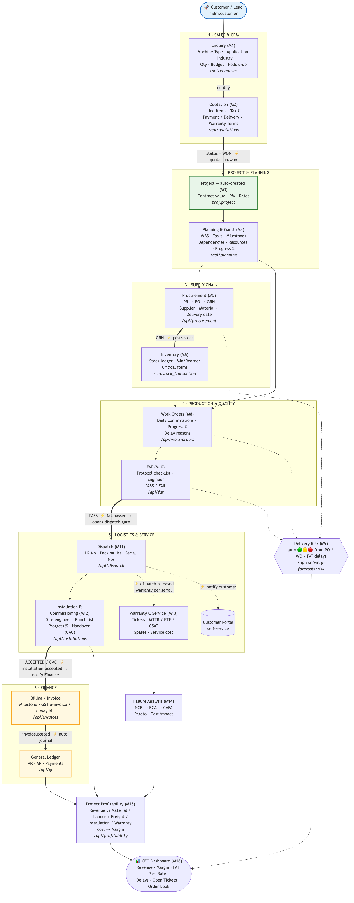

From first enquiry to final profitability — one order through the system

Thick arrows = stage hand-offs · ⚡ = automatic trigger (no re-keying) · dotted = side-effect (warranty / notification / risk) · 🟢🟡🔴 = live delivery risk
| # | Stage | Who | Screen / API | What is entered | What the system does |
|---|---|---|---|---|---|
| 1 | Enquiry | Sales Exec | Enquiries → New | Customer Mahindra, Machine Vertical Scanner, Application Hardening, Industry Automotive, Qty 1, Budget ₹38 L | Generates ENQ/…, status NEW |
| 2 | Quotation | Sales | Quotations → New | Line: MF Vertical Scanner 100 kW + tooling; Tax 18% GST; Payment 30/60/10; Warranty 12 mo from commissioning | QTN/…; on Send ⚡ emails PDF; on WON ⚡ quotation.won |
| 3 | Project | automatic | Projects | — | ⚡ Auto-creates PRJ/… with contract value & PM, linked to the quotation |
| 4 | Planning | Project Manager | Planning | WBS (design→fab→assembly→test), milestones, task dependencies, resource % complete | Gantt + baseline; feeds Workload & Delivery Risk |
| 5 | Procurement | Purchase | PR → PO → GRN | PR for copper coil, SCR/IGBT stack, transformer; PO to supplier; GRN on arrival | On GRN ⚡ posts a stock movement |
| 6 | Inventory | Stores | Stock · Critical Items | — | On-hand updated; below Min/Reorder flags a Critical Item on the dashboard |
| 7 | Production | Production | Work Orders | Daily confirmations, progress %, any delay reason | WIP tracked; late WOs push Delivery Risk to 🟡/🔴 |
| 8 | FAT | QC Engineer | FAT | Protocol checklist, witnessing engineer, PASS | On PASS ⚡ fat.passed opens the dispatch gate |
| 9 | Dispatch | Logistics | Dispatch | LR number, packing list, serial numbers | On RELEASE ⚡ starts warranty per serial + notifies the customer portal |
| 10 | Installation | Service Engineer | Installations | Site engineer, punch-list, progress %, Customer Acceptance Cert (CAC) | On ACCEPTED ⚡ notifies Finance to raise final billing |
| 11 | Billing | Finance | Invoices | Milestone invoice, GST e-invoice / e-way bill | On post ⚡ auto-posts a balanced GL journal; payments ⚡ GL too |
| 12 | Service | Service | Service Tickets | Complaint, field visits, spares, resolution | Computes MTTR / First-Time-Fix / CSAT / service cost |
| 13 | Failure | QC | NCR / CAPA | Failure mode, root cause, cost impact | Pareto of failures by frequency + cost |
| 14 | Profitability | Finance / CEO | Profitability | — | Revenue vs cost by category (Material/Labour/Freight/Installation/Warranty) → Margin % |
| 15 | Dashboard | CEO / Mgmt | Dashboard | — | Live KPIs: Revenue, Avg Margin, FAT Pass Rate, Production Efficiency, Delivery-at-Risk, Open Tickets, Order Book |
quotation.won → Project · fat.passed → Dispatch gate ·
dispatch.released → Warranty + Customer notice ·
installation.accepted → Finance · invoice/payment → General Ledger.